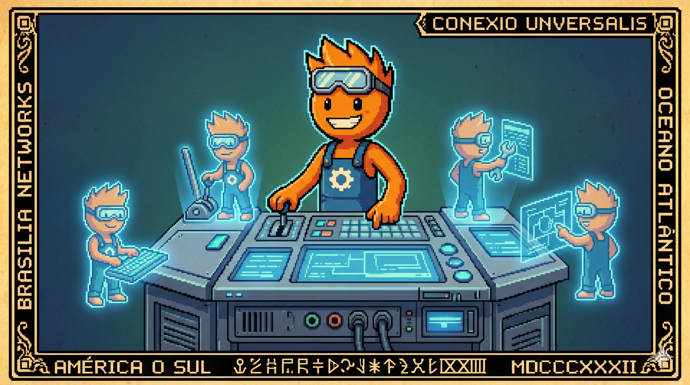

Canto V: O Motor Nativo e Threads Virtuais
Pra rodar duas tarefas, o sistema antigamente
Criava thread pesada, que travava de repente.
Mas com o Loom no Java 25 a coisa muda de figura:
São milhares de agentes leves, sem perder a compostura!
O cupom sai na impressora, a gaveta faz barulho,
E a CPU de dois núcleos trabalha com muito orgulho.

O que é o Motor Nativo?
Chamamos de Motor Nativo o núcleo de execução do CaraCore PDV compilado sob compilação AOT (Ahead-of-Time). Ele roda de forma direta no processador local sem a necessidade de uma JVM (Java Virtual Machine) interpretando bytecode em tempo de execução e sem dependências externas.
O casamento desse motor nativo com os recursos modernos de concorrência é o que permite extrair máxima responsividade de hardware extremamente defasado.
O Desafio da Concorrência de Entrada/Saída (I/O)
A aplicação local do caixa precisa conversar com diversos periféricos físicos ao mesmo tempo: ler o leitor de código de barras, receber retornos do terminal de cartão de crédito (TEF), disparar a abertura da gaveta de dinheiro e mandar comandos para a impressora térmica de cupons.
Historicamente, cada uma dessas tarefas exigia uma thread física do sistema operacional (Thread de Plataforma). Se uma impressora térmica travar por falta de papel, a thread responsável pelo seu controle fica bloqueada esperando o retorno físico do hardware. Em computadores antigos de ponto de venda, esgotar o pool de threads do sistema significa travar a interface do operador inteira, parando o faturamento.
Comparativo: Threads Físicas vs. Threads Virtuais
Para entender o impacto de concorrência na borda, veja o custo e o comportamento dessas duas tecnologias de execução paralela:
Arquitetura de Execução de I/O na Borda
Ao usar threads virtuais, o fluxo de comunicação do caixa com os periféricos físicos e banco de dados é desacoplado das threads reais de processador (Carrier Threads), otimizando o paralelismo:
Código na Prática: Comunicação Concorrente com Periféricos
Na prática, configuramos o Spring Boot com Java 25 para despachar as leituras de hardware usando pools virtuais. Veja como executamos tarefas em paralelo (ler balança e enviar cupom para impressora) sem correr o risco de bloquear a interface principal do operador:
@Service
public class HardwareService {
public void processarOperacoesParalelas(Venda venda) {
// Cria um executor thread-safe baseado em threads virtuais
try (var executor = Executors.newVirtualThreadPerTaskExecutor()) {
// Dispara leitura da balança física em background
executor.submit(() -> {
double peso = lerBalancaSerial();
venda.setPesoTotal(peso);
});
// Dispara a escrita da transação de cupom de forma simultânea
executor.submit(() -> {
enviarComandosImpressao(venda);
});
} // O bloco try fecha o executor garantindo o join implícito de todas as tarefas virtuais
}
}
Limitações Reais das Threads Virtuais
Embora permitam escalar tarefas simultâneas, as threads virtuais possuem trade-offs claros que devem ser compreendidos:
- Problema de Pinning (Fixação): Historicamente, o uso de blocos monitor legados (`synchronized`) causava pinning. Sob o **Java 25 (JEP 491)**, o pinning sob monitor locks sincronizados foi resolvido na JVM, permitindo que threads virtuais realizem yield normalmente. Porém, chamadas nativas em C via JNI/FFI ou esperas ativas no ClassLoader ainda prendem (pin) a thread virtual ao núcleo físico da thread carrier, exigindo atenção da equipe técnica.
- Vazão (Throughput) vs. Latência de CPU: As threads virtuais não tornam tarefas brutas de CPU mais rápidas. Elas são projetadas para aumentar a vazão de concorrência em tarefas que passam a maior parte do tempo bloqueadas em I/O (rede e disco). Para processamento CPU-bound puro (como criptografia fiscal pesada), pools de threads tradicionais permanecem mais adequados.
A Revolução das Threads Virtuais (Project Loom)
No CaraCore PDV, rodando sob o Java 25, resolvemos esse gargalo adotando as Threads Virtuais (Project Loom). Diferente das threads clássicas, as threads virtuais são gerenciadas diretamente pela JVM e não pelo sistema operacional. Elas são extremamente leves (consomem poucos bytes de memória).
Quando uma thread virtual realiza uma operação de escrita em disco (SQLite) ou efetua uma chamada de rede assíncrona, a JVM detecta o bloqueio de I/O, retira temporariamente a thread virtual do núcleo físico da thread carrier e o libera para processar outras tarefas. Assim, conseguimos gerenciar centenas de tarefas concorrentes em background de forma eficiente.
⚖️ O Veredito da Bancada (Técnico vs. Negócios)
💻 Para Técnicos (A Baseline)
Ative o suporte a Threads Virtuais no Spring Boot 3.x com `spring.threads.virtual.enabled=true`. O Spring criará instâncias de `VirtualThread` para cada requisição local. Como drivers seriais baseados em JNI/C (`jSerialComm`) causam o pinning da thread virtual à thread carrier física, encapsulamos as escritas de hardware em um pool de threads de plataforma dedicado, permitindo isolamento total de I/O e concorrência massiva.
👔 Para Negócios (O Retorno)
Sistemas periféricos lentos ou travados (como gavetas emperradas ou impressoras sem papel) não congelam a tela de vendas. O operador pode continuar passando itens no teclado enquanto o suporte físico resolve a fila de cupons de papel em paralelo.
Hashtags
Contato
- E-mail: suporte@caracore.com.br
- Site: www.caracore.com.br
- LinkedIn: Cara Core Informática
Conheça a concorrência assíncrona do CaraCore PDV com Java 25 e esqueça os travamentos de hardware no balcão.
Otimizar Minha Operação